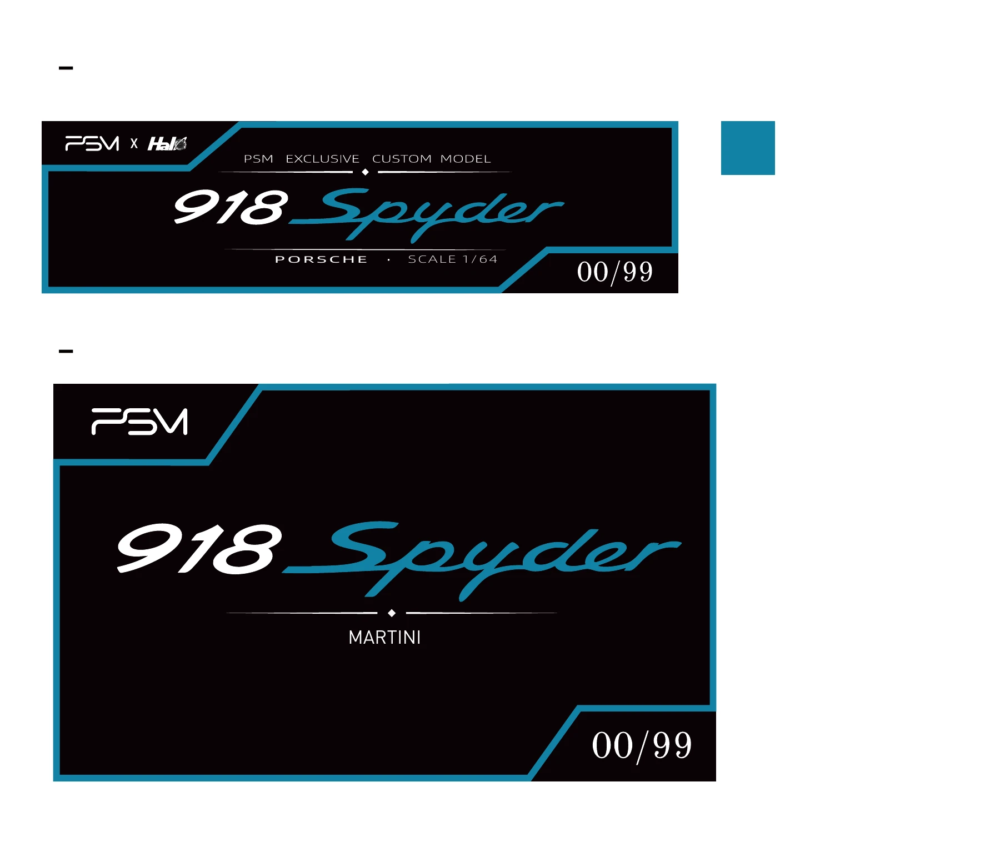
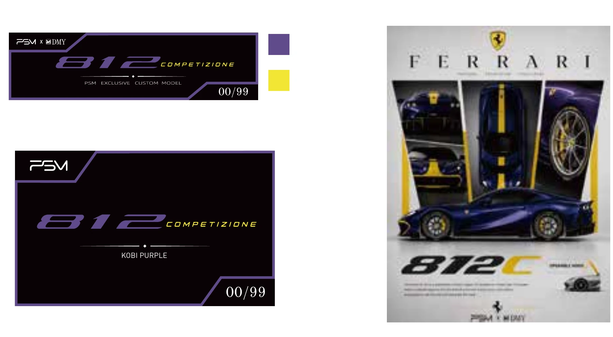

AI 辅助品牌视觉
围绕产品主题组织画面与视觉方向，让车身色彩、轮廓和细节成为关注点。
AI 辅助品牌视觉设计与商业交付 · Pansong Model
围绕车模产品的颜色、轮廓与细节，
将宣传海报延展为铭牌、贴纸等商业物料。
与 Pansong Model 合作，将不同车型与配色转译为有辨识度的产品视觉。AI 辅助视觉探索，人工完成选择、版式组织与交付把关；本案例聚焦视觉与物料设计，不将车模产品制造归为个人成果。
移动鼠标浏览卡片，点击查看原图。
品牌、车型、配色和编号在不同载体上保持一致。选取两组原始 PDF 交付版面，让铭牌与贴纸的设计也成为案例的一部分。


图片由原始交付 PDF 渲染，保留版面中的配色参考与示例编号。展示的是设计文件，不据此宣称实际印制数量、销售额或车型官方授权关系。
围绕产品主题组织画面与视觉方向，让车身色彩、轮廓和细节成为关注点。
在不同车型与配色之间延续信息层级，同时保留每款产品的辨识度。
留下可展示的宣传图与铭牌、贴纸版面。商业效果不以账号总互动或示例编号代替。